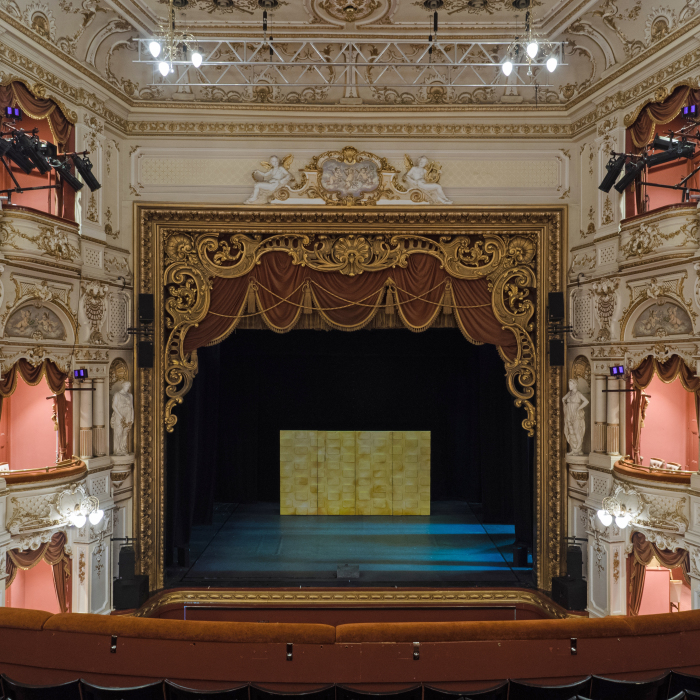
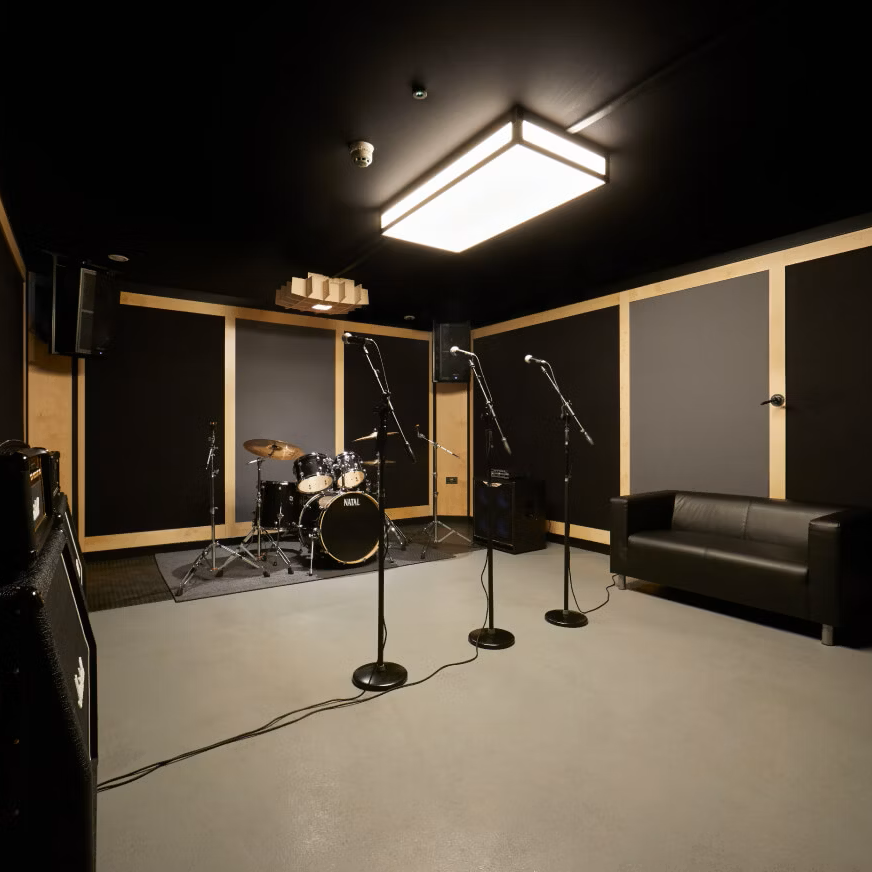
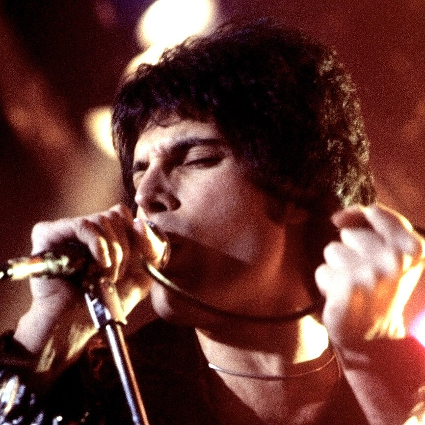
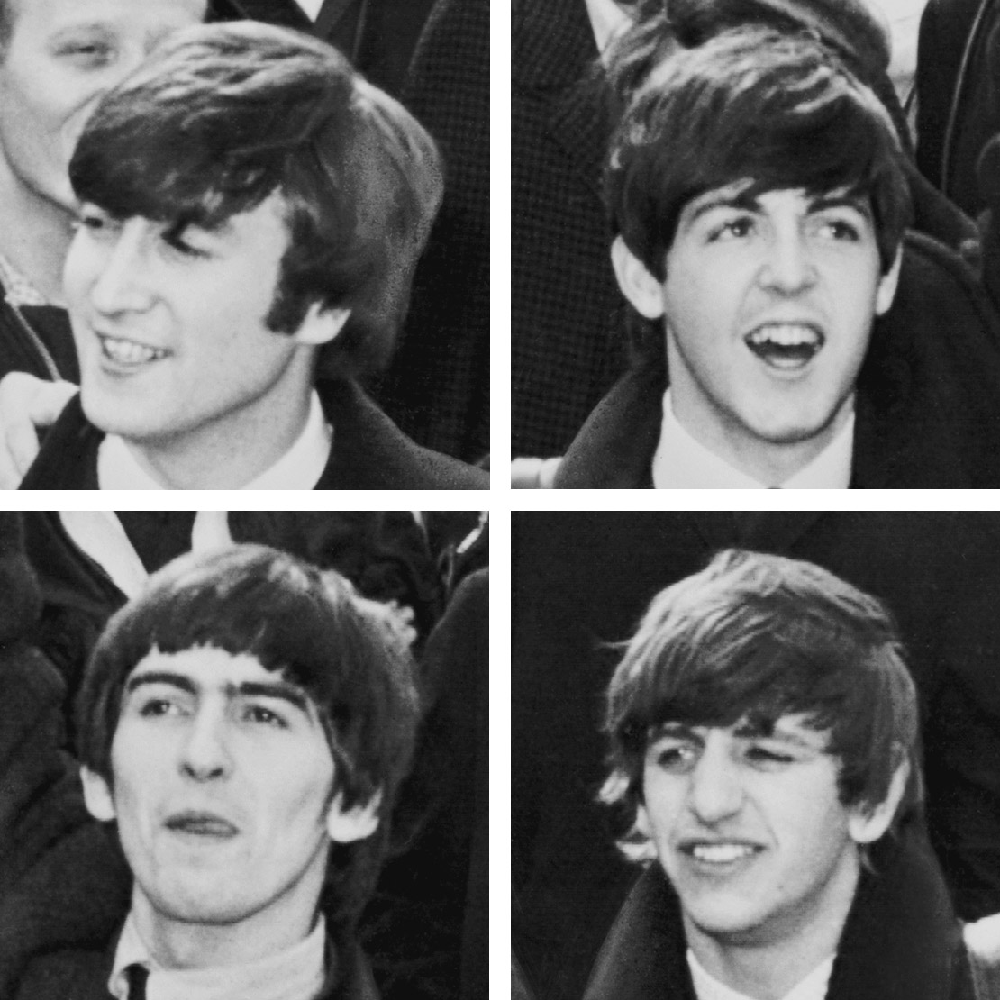
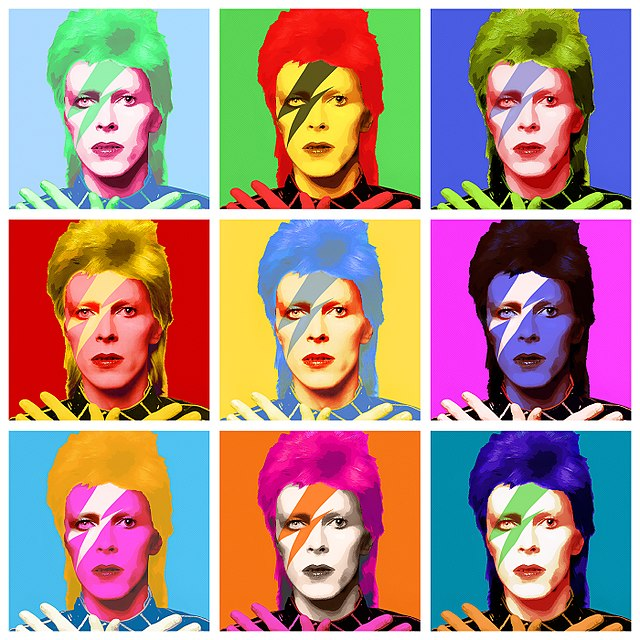

Gulbenkian, University of Kent
Venue
Kent, England, United Kingdom
23.00 per hour

Sheffield Lyceum
Venue
Sheffield, England, United Kingdom
7.90 per hour

Pirate Studios practice room
Practice space
Anytown, USA
Free

We Are The Champions Tour
Freddie Mercury
Carnegie Hall, New York, NY, USA

The Beatles @ Irving Plaza
Ringo Starr
Irving Plaza, New York, NY, USA

Ziggy Stardust and the Spiders from Mars
David Bowie
Madison Square Garden, New York, NY, USA
Alanis Morissette - Jagged Little Pill Tour
Alanis Morissette
Capitol Theatre, Port Chester, NY, USA
Jerry Leiber
Producer
Michael Stoller
Producer
Wolfgang Amadeus Mozart
Classically trained and world-renowned. 😜
Schedule Availability
Monday
Tuesday
Wednesday
Thursday
Friday
Instruments played
Clavichord
Violin
Genres/artists
Classical
Status
Bands
Upcoming gigs
Mon, Dec 8
Music